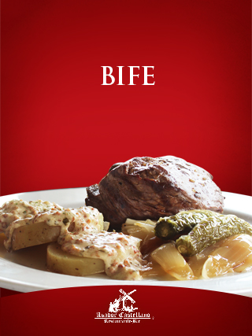

Horneado con finas hierbas de olor, ajo y laurel. Se acompaña con ensalada verde, guacamole y tortillas de maíz hechas a mano.
$75Suave corazón de filete a la parrilla acompañado de papa al horno, cebolla y chiles toreados.
$120Suave corazón de filete a la parrilla servido en plancha caliente, se filetea; es preparado en mesa haciendo 4 medallones y se flamea con mezcal de la casa. Acompañado de papa al horno, cebolla y chiles toreados.
$120Suave corazón de filete preparado en mesa, se filetea haciendo 5 medallones, marinado con jerez, salsa inglesa y maggi. Se deja reposar unos minutos. El huésped le da el término deseado en una plancha caliente. Acompañado de papa al horno, cebolla y chiles toreado.
$135